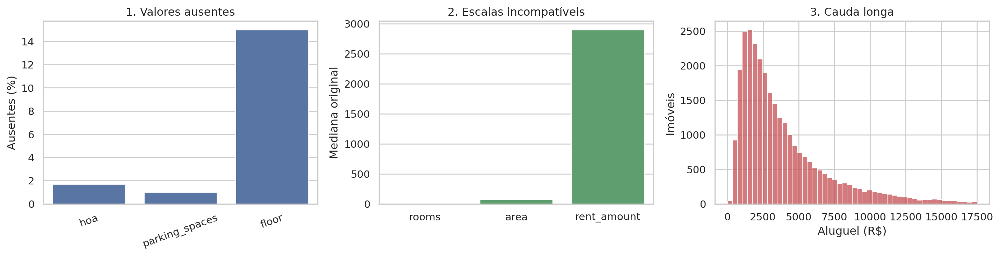
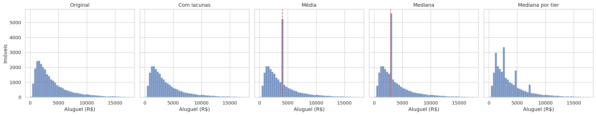
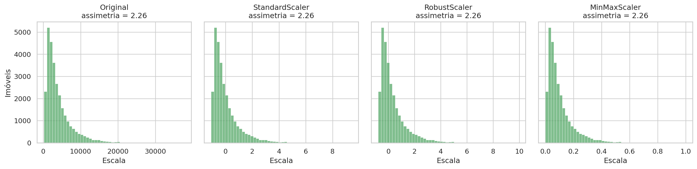
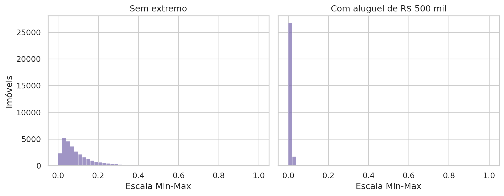
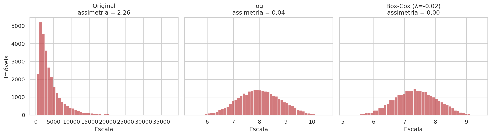
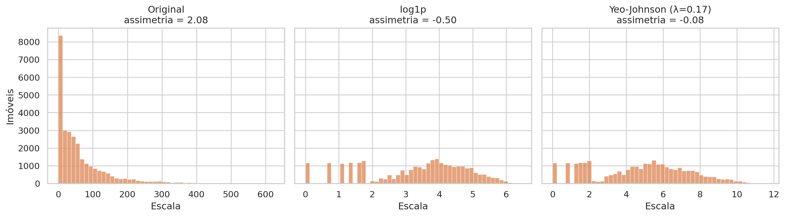
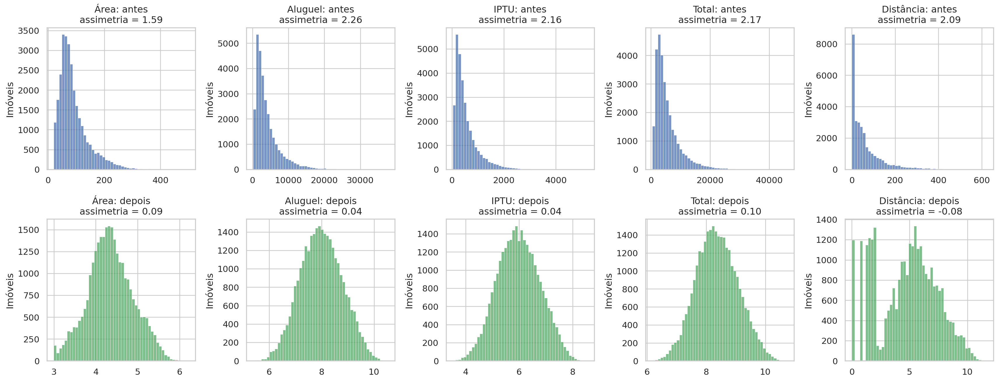

# Importa as bibliotecas e define o tema dos gráficos
from pathlib import Path
import numpy as np
import pandas as pd
import matplotlib.pyplot as plt
import seaborn as sns
from scipy import stats
from sklearn.preprocessing import (
MinMaxScaler,
PowerTransformer,
RobustScaler,
StandardScaler,
)
sns.set_theme(style="whitegrid", palette="colorblind")Aula 6 - Imputação e Normalização de Dados
Motivação
Na Aula 5, usamos assimetria, curtose e valores atípicos para descrever distribuições. O valor dos pedidos, por exemplo, apresentava uma cauda longa à direita, e um grupo pequeno de clientes atacadistas elevava a média. Essa análise caracterizava os dados observados, mas ainda não envolvia qualquer modificação da base.
Nesta aula, o diagnóstico passa a orientar decisões de tratamento. Antes de ajustar um modelo, construir um indicador ou comparar grupos, uma base real geralmente exige algum preparo. Esse conjunto de operações recebe o nome de pré-processamento. As escolhas feitas nessa etapa alteram os dados que chegam às análises posteriores e, portanto, afetam as estimativas e conclusões produzidas a partir deles.
Para ilustrar, usaremos a base de anúncios de aluguel em São Paulo da atividade prática. Ela reúne três problemas que aparecem com frequência em dados reais:
- lacunas em algumas colunas, que podem representar perda de informação ou ausência estrutural,
- variáveis medidas em unidades diferentes, como área em m², aluguel em reais e número de quartos,
- Distribuições com cauda longa, em que poucos imóveis muito caros esticam a escala.
Cada problema pede uma decisão diferente. A imputação estima valores que não foram observados. O escalonamento coloca variáveis em escalas numéricas comparáveis. As transformações não lineares modificam a geometria da distribuição e podem reduzir sua assimetria. O termo normalização aparece na literatura com significados diferentes, por isso o roteiro distingue explicitamente escalonamento de transformação. Nenhum desses tratamentos é neutro. Imputar introduz valores estimados, escalonar muda a unidade de representação e transformar altera as distâncias entre as observações. Avaliaremos cada técnica tanto pelo problema que resolve quanto pelas mudanças que produz.
O que cada tratamento muda nos dados?
Objetivos de aprendizagem
Ao final deste roteiro, você será capaz de:
- Distinguir ausência estrutural de ausência por falha de registro.
- Imputar valores pela média, mediana, moda e mediana por grupo, além de medir o erro de cada estratégia.
- Escalonar variáveis com
StandardScaler,RobustScalereMinMaxScaler, reconhecendo a sensibilidade de cada um a extremos. - Reduzir a assimetria com
log,log1p, Box-Cox e Yeo-Johnson. - Explicar a diferença entre mudar a régua (escalonar) e mudar a forma (transformar) de uma distribuição.
Como usar este roteiro
O roteiro usa a base imoveis_sao_paulo.csv, a mesma da atividade prática, salva em imoveis-sao-paulo/data/.
Além das bibliotecas da Aula 5, usamos o módulo sklearn.preprocessing do scikit-learn.
Ao final, três perguntas ajudam a consolidar as escolhas de tratamento.
1. Preparando a base
Começamos importando as bibliotecas usadas no carregamento, na transformação e na visualização dos dados.
Em seguida, carregamos a base e fazemos três ajustes iniciais:
- padronizamos os nomes das colunas,
- removemos linhas duplicadas,
- criamos
property_type: imóveis sem andar são casas.
# Novos nomes para as colunas com espaços e símbolos
column_names = {
"parking spaces": "parking_spaces",
"hoa (R$)": "hoa",
"rent amount (R$)": "rent_amount",
"property tax (R$)": "property_tax",
"total (R$)": "total",
}# Carrega a base, remove duplicatas e identifica o tipo de imóvel
imoveis = (
pd.read_csv("imoveis-sao-paulo/data/imoveis_sao_paulo.csv")
.rename(columns=column_names)
.drop_duplicates()
.reset_index(drop=True)
.assign(
1 property_type=lambda df: np.where(
df["floor"].isna(),
"casa",
"apartamento",
)
)
)- 1
-
np.whereescolhe o rótulo linha a linha: imóveis sem andar são casas, e os demais, apartamentos.
1.1 Os três problemas da aula
Antes de tratar qualquer coluna, precisamos saber o que há de errado com ela. Esta seção faz um diagnóstico rápido da base, no espírito da Aula 5, e o resume em uma única figura com três painéis. Cada painel responde a uma pergunta e antecipa um dos problemas que a aula vai tratar.
| Painel | Pergunta | O que observar |
|---|---|---|
| 1. Valores ausentes | Quais colunas têm lacunas, e em que proporção? | Se as proporções são parecidas ou se alguma coluna destoa das demais |
| 2. Escalas incompatíveis | As variáveis numéricas estão na mesma ordem de grandeza? | A distância entre as medianas de quartos, área e aluguel |
| 3. Cauda longa | Como os aluguéis se distribuem? | Onde se concentra a maioria dos imóveis e até onde a cauda se estende |
Para montar a figura, calculamos antes três objetos:
missing: a porcentagem de valores ausentes emhoa,parking_spacesefloor;scales: a mediana derooms,areaerent_amount, cada uma em sua unidade original;limit: o percentil 99 do aluguel, usado apenas para recortar o eixo do histograma. Sem ele, os poucos aluguéis mais altos esticariam o eixo e esconderiam a forma da distribuição.
# Valores exibidos em cada painel da figura
missing = (
imoveis[["hoa", "parking_spaces", "floor"]]
.isna()
1 .mean()
.mul(100)
)
scales = (
imoveis[["rooms", "area", "rent_amount"]]
.median()
)
2limit = imoveis["rent_amount"].quantile(.99)- 1
-
A média de uma coluna booleana é a proporção de valores
True, aqui a proporção de ausentes. - 2
- O percentil 99 recorta o 1% mais extremo apenas na visualização. Nenhum dado é removido.
# Figura-resumo com os três problemas da aula
fig, axes = plt.subplots(1, 3, figsize=(15, 4))
sns.barplot(
x=missing.index,
y=missing.values,
ax=axes[0],
color="#4C72B0",
)
axes[0].set(
title="1. Valores ausentes",
ylabel="Ausentes (%)",
xlabel="",
)
axes[0].tick_params(axis="x", rotation=20)
sns.barplot(
x=scales.index,
y=scales.values,
ax=axes[1],
color="#55A868",
)
axes[1].set(
title="2. Escalas incompatíveis",
ylabel="Mediana original",
xlabel="",
)
sns.histplot(
imoveis["rent_amount"],
bins=50,
binrange=(0, limit),
ax=axes[2],
color="#C44E52",
)
axes[2].set(
title="3. Cauda longa",
xlabel="Aluguel (R$)",
ylabel="Imóveis",
)
plt.tight_layout()
plt.show()
A leitura da figura revela os três problemas:
- Valores ausentes.
hoaeparking_spacestêm poucas lacunas (cerca de 2% e 1%), enquantofloorchega a 15%. Uma diferença tão grande sugere que a ausência emfloortem uma causa própria, investigada na seção 2. - Escalas incompatíveis. O imóvel típico tem 2 quartos, cerca de 76 m² e aluguel de R$ 2.900. As três medianas estão separadas por ordens de grandeza, e o aluguel domina o painel apenas por causa da unidade.
- Cauda longa. Três quartos dos aluguéis ficam abaixo de cerca de R$ 5.100, mas a cauda se estende muito à direita. O maior aluguel chega a quase R$ 38 mil, bem além do recorte do gráfico. A média (cerca de R$ 4.000) fica acima da mediana, o mesmo padrão de assimetria positiva visto na Aula 5.
A ordem das seções acompanha uma sequência comum de pré-processamento. Primeiro, investigamos as lacunas e decidimos quais delas representam informação perdida. Muitos estimadores não aceitam valores ausentes em sua entrada, mas esse não é o único motivo para tratá-los. Também precisamos evitar que procedimentos diferentes descartem subconjuntos distintos da base. Depois, examinamos separadamente a escala numérica e a forma das distribuições.
2. Ausência estrutural
Ao encontrar uma coluna com lacunas, é tentador preenchê-las imediatamente. Antes de escolher uma técnica, precisamos investigar por que o valor está ausente. Nem toda célula vazia representa erro de coleta ou perda de informação.
Na base de imóveis, floor e total_floors estão ausentes nas casas. Não houve falha de cadastro. Esses atributos descrevem a posição de uma unidade em um edifício e, portanto, não se aplicam a casas. Esse tipo de lacuna é chamado de ausência estrutural, pois decorre da definição da variável para determinado tipo de observação. Imputar um número produziria um valor sem referente real.
# Número de imóveis e proporção sem andar, por tipo
(
imoveis
.groupby("property_type")
.agg(
imoveis=("property_type", "size"),
proporcao_sem_andar=(
"floor",
lambda x: (
x
.isna()
.mean()
),
),
)
)| imoveis | proporcao_sem_andar | |
|---|---|---|
| property_type | ||
| apartamento | 25024 | 0.0 |
| casa | 4415 | 1.0 |
Importante
Quando a ausência decorre de uma característica conhecida da observação, registre essa característica e não impute um valor numérico. Aqui, property_type torna explícita a informação que antes estava codificada apenas pela lacuna.
Depois de separar o caso estrutural, restam lacunas que podem representar informação perdida, como um aluguel não informado ou um número de vagas não registrado. Para esses casos, a imputação é uma alternativa possível. A escolha ainda depende do mecanismo que produziu a ausência e da quantidade de dados faltantes.
3. Imputação: o impacto das alternativas
Imputar consiste em substituir um valor ausente por uma estimativa calculada a partir das informações disponíveis. Há estratégias simples, como usar uma medida de posição da própria coluna, e métodos multivariados, que estimam cada lacuna a partir de outras variáveis. Nesta aula, trabalharemos com estatísticas descritivas da Aula 5. Mesmo simples, essas estratégias permitem observar efeitos importantes, como concentração artificial de valores e redução da variabilidade.
Há uma dificuldade prática. Em uma lacuna real, o valor verdadeiro não foi observado. Sem uma referência, não podemos calcular diretamente o erro cometido pela imputação.
A saída é simular o problema:
- partir de registros completos,
- apagar alguns valores conhecidos,
- imputar e comparar com o valor original.
Primeiro, a função que apaga uma fração dos valores e a base completa, que servirá de gabarito.
# Função de apagamento e base-gabarito
1rng = np.random.default_rng(42)
def erase_at_random(values, share):
2 return values.mask(rng.random(len(values)) < share)
3imoveis_true = (
imoveis
.dropna(subset=["hoa", "parking_spaces"])
.reset_index(drop=True)
)- 1
- A semente fixa garante o mesmo apagamento a cada execução.
- 2
-
rng.randomsorteia um número em [0, 1) para cada linha..masktroca porNaNos valores cujo sorteio fica abaixo deshare. - 3
-
O gabarito mantém apenas registros com
hoaeparking_spacesconhecidos.
Em seguida, criamos lacunas em três variáveis de tipos diferentes: discreta, contínua e categórica.
# Apaga valores em três colunas de tipos diferentes
imoveis_missing = (
imoveis_true
1 .assign(
rooms=lambda df: erase_at_random(df["rooms"], .10),
rent_amount=lambda df: erase_at_random(df["rent_amount"], .15),
furniture=lambda df: erase_at_random(df["furniture"], .08),
)
)- 1
- As proporções apagadas são 10% dos quartos, 15% dos aluguéis e 8% da mobília.
Conferimos quantos valores foram apagados:
# Quantidade e proporção de valores apagados por coluna
(
imoveis_missing[["rooms", "rent_amount", "furniture"]]
.isna()
.sum()
.to_frame("ausentes")
.assign(
proporcao=lambda x: (
x.ausentes / len(imoveis_missing)
).round(3)
)
)| ausentes | proporcao | |
|---|---|---|
| rooms | 2783 | 0.097 |
| rent_amount | 4308 | 0.150 |
| furniture | 2254 | 0.079 |
Por que o mecanismo de ausência importa?
O apagamento simulado é completamente aleatório, mecanismo conhecido como MCAR (missing completely at random). Isso significa que a probabilidade de apagar uma célula não depende de nenhuma variável observada nem do próprio valor apagado.
Em dados reais, essa condição é forte e nem sempre plausível. A ausência pode estar associada ao próprio valor. Se imóveis caros anunciam “valor sob consulta” com maior frequência, por exemplo, a distribuição dos aluguéis observados deixa de representar a distribuição completa. Uma imputação baseada apenas nesses valores tende a subestimar os aluguéis omitidos.
3.1 Média, mediana e mediana agrupada
As estratégias mais simples substituem todas as lacunas por uma única constante calculada com os valores observados da coluna. A média utiliza toda a magnitude dos dados e, por isso, responde fortemente a valores extremos. A mediana depende apenas da ordenação e é mais resistente a caudas longas.
# Constantes para a imputação simples
rent_mean = (
imoveis_missing.rent_amount
.mean()
)
rent_median = (
imoveis_missing.rent_amount
.median()
)A mediana por tier condiciona a estimativa ao padrão do imóvel. Cada lacuna recebe a mediana calculada entre os anúncios do mesmo grupo. Se um tier não tiver aluguéis observados, não será possível calcular sua mediana. Nesse caso, a mediana global funciona como estratégia de contingência.
# Imputação pela mediana de cada tier
rent_group = (
imoveis_missing
.groupby("tier")
.rent_amount
1 .transform(lambda x: x.fillna(x.median()))
2 .fillna(rent_median)
)- 1
-
.transformdevolve uma série do mesmo tamanho da original, alinhada ao seu índice. - 2
- Grupos sem observações recebem a mediana global.
Reunimos as versões do aluguel para compará-las lado a lado:
# Versões do aluguel a comparar
rent_versions = {
"Original": imoveis_true.rent_amount,
"Com lacunas": imoveis_missing.rent_amount,
"Média": imoveis_missing.rent_amount.fillna(rent_mean),
"Mediana": imoveis_missing.rent_amount.fillna(rent_median),
"Mediana por tier": rent_group,
}# Histograma de cada versão do aluguel
fig, axes = plt.subplots(1, 5, figsize=(20, 4), sharey=True)
limit = imoveis_true.rent_amount.quantile(.99)
for ax, (label, values) in zip(axes, rent_versions.items()):
sns.histplot(
values.dropna(),
bins=50,
binrange=(0, limit),
ax=ax,
color="#4C72B0",
)
ax.set(
title=label,
xlabel="Aluguel (R$)",
ylabel="Imóveis",
)
1 if label == "Média":
ax.axvline(
rent_mean,
color="#C44E52",
linestyle="--",
)
if label == "Mediana":
ax.axvline(
rent_median,
color="#C44E52",
linestyle="--",
)
plt.tight_layout()
plt.show()- 1
- Nos painéis da média e da mediana, a linha tracejada marca a constante usada para preencher as lacunas.

Dois efeitos aparecem nos histogramas:
- média e mediana concentram todas as lacunas em um único valor, criando um pico artificial e reduzindo a dispersão,
- mediana por tier distribui as lacunas entre vários valores, um por grupo.
3.1.1 Erro absoluto médio (MAE)
Os histogramas mostram como cada estratégia altera a forma da distribuição, mas não dizem quão perto cada valor imputado ficou do valor verdadeiro. Uma estratégia pode preservar bem o formato do histograma e, ainda assim, errar muito imóvel a imóvel. Para avaliar a precisão das estimativas, precisamos de uma métrica de erro. É aqui que o gabarito se torna útil: como os valores foram apagados de propósito, sabemos exatamente quanto cada lacuna deveria valer.
O erro de uma imputação é a diferença entre o valor verdadeiro \(y_i\) e o valor imputado \(\hat{y}_i\). Essa diferença pode ser positiva ou negativa, e uma média simples dos erros deixaria que subestimativas e superestimativas se cancelassem, como a soma dos desvios em torno da média na Aula 5. O erro absoluto médio (MAE, do inglês mean absolute error) evita esse cancelamento ao tomar o valor absoluto de cada erro antes de calcular a média:
\[ \text{MAE} = \frac{1}{n}\sum_{i=1}^{n} \left| y_i - \hat{y}_i \right| \]
Aqui, \(n\) é o número de lacunas imputadas. O MAE é expresso na mesma unidade da variável, o que facilita a interpretação: um MAE de R$ 500 significa que, em média, a imputação errou o aluguel em R$ 500, para mais ou para menos.
Um exemplo pequeno ajuda a fixar o cálculo. Suponha três imóveis cujo aluguel foi apagado e imputado com a mesma constante, R$ 3.000:
| Imóvel | Verdadeiro (\(y_i\)) | Imputado (\(\hat{y}_i\)) | Erro absoluto |
|---|---|---|---|
| A | R$ 2.000 | R$ 3.000 | R$ 1.000 |
| B | R$ 3.000 | R$ 3.000 | R$ 0 |
| C | R$ 10.000 | R$ 3.000 | R$ 7.000 |
O MAE é \((1.000 + 0 + 7.000)/3 \approx\) R$ 2.666,67. Observe que um único imóvel caro responde pela maior parte do erro.
Dois cuidados orientam o cálculo nesta seção:
- Apenas as posições imputadas entram na conta. Nas posições observadas, o valor não foi alterado e o erro é zero por construção. Incluí-las reduziria artificialmente o MAE.
- A escolha da métrica favorece certas estratégias. A mediana é o valor constante que minimiza a soma dos erros absolutos, enquanto a média minimiza a soma dos erros quadráticos. Por isso, entre as duas constantes, espera-se que a mediana apresente MAE menor, sobretudo em distribuições assimétricas como a do aluguel.
Primeiro, recuperamos no gabarito os valores verdadeiros das posições apagadas:
# Posições apagadas e seus valores verdadeiros
rent_missing = imoveis_missing.rent_amount.isna()
truth = imoveis_true.loc[rent_missing, "rent_amount"]# MAE de cada estratégia, apenas nas posições imputadas
(
pd.Series(
{
"Média": (
(truth - rent_mean)
.abs()
.mean()
),
"Mediana": (
(truth - rent_median)
.abs()
.mean()
),
"Mediana por tier": (
(truth - rent_group[rent_missing])
.abs()
.mean()
),
},
name="MAE (R$)",
)
.round(2)
.to_frame()
)| MAE (R$) | |
|---|---|
| Média | 2505.30 |
| Mediana | 2313.52 |
| Mediana por tier | 1820.84 |
Quanto menor o MAE, menor foi o erro médio das imputações neste experimento. Como esperado, a mediana erra menos que a média. A mediana por tier reduz ainda mais o erro, porque usa uma informação adicional, o padrão do imóvel, para aproximar a estimativa do valor verdadeiro.
Essa comparação avalia a precisão pontual sob o mecanismo MCAR simulado. Ela não garante que a mesma estratégia seja adequada quando o padrão de ausência dos dados reais for diferente.
3.2 Moda e variáveis discretas
Para variáveis categóricas nominais, operações aritméticas como média e mediana não têm interpretação válida. Uma alternativa simples é a moda, isto é, a categoria observada com maior frequência.
Calculamos a categoria mais frequente de furniture:
# Categoria mais frequente de furniture
furniture_mode = (
imoveis_missing.furniture
1 .mode()
.iloc[0]
)
furniture_mode- 1
-
.mode()devolve uma série, pois pode haver empate..iloc[0]seleciona o primeiro valor.
'not furnished'Depois da imputação, todas as lacunas passam a contar como ocorrências dessa categoria. A frequência da moda aumenta artificialmente, um efeito que precisa ser considerado ao interpretar a distribuição resultante.
# Contagem das categorias antes e depois da imputação
(
pd.concat(
{
1 "Antes": imoveis_missing.furniture.value_counts(dropna=False),
"Depois da moda": (
imoveis_missing.furniture
.fillna(furniture_mode)
.value_counts()
),
},
axis=1,
)
.fillna(0)
)- 1
-
dropna=Falseinclui os valoresNaNna contagem.
| Antes | Depois da moda | |
|---|---|---|
| furniture | ||
| not furnished | 17265 | 19519.0 |
| furnished | 9122 | 9122.0 |
| NaN | 2254 | 0.0 |
Em uma variável quantitativa discreta, como o número de quartos, a média é matematicamente definida, mas pode produzir um valor incompatível com o domínio da variável, como uma quantidade fracionária de quartos:
# Média, mediana e moda do número de quartos
(
pd.Series(
{
"média": imoveis_missing.rooms.mean(),
"mediana": imoveis_missing.rooms.median(),
"moda": (
imoveis_missing.rooms
.mode()
.iloc[0]
),
},
name="quartos",
)
.to_frame()
)| quartos | |
|---|---|
| média | 2.262085 |
| mediana | 2.000000 |
| moda | 2.000000 |
3.3 Resumo da imputação
| Situação | Escolha inicial |
|---|---|
| Contínua e simétrica | Média |
| Assimétrica ou com extremos | Mediana |
| Categórica ou discreta | Moda ou mediana |
| Varia entre grupos conhecidos | Estatística por grupo |
Importante
Antes de imputar, crie uma coluna indicadora para distinguir valores observados de estimados.
E se um grupo não tiver observações?
Sua mediana será NaN. Use a mediana global como segunda opção. Mesmo quando existe algum valor observado, grupos muito pequenos produzem estimativas com alta variabilidade amostral.
Encerrada a comparação entre estratégias de imputação, passamos a outro problema. As colunas são expressas em unidades e ordens de grandeza diferentes. As duas próximas seções distinguem o escalonamento, que modifica a representação numérica, das transformações não lineares, que também alteram a forma da distribuição.
4. Escalonamento: a régua muda, a forma não
O termo normalização não tem uso inteiramente uniforme na literatura e nas bibliotecas. Nesta seção, tratamos de escalonamento, isto é, transformações afins do tipo \(x' = (x - c)/s\). O parâmetro \(c\) representa um centro, como média, mediana ou mínimo, e \(s\) representa uma medida de escala, como desvio-padrão, IQR ou amplitude. Essa operação preserva a ordenação das observações. Também multiplica todas as distâncias por uma mesma constante positiva, de modo que o formato do histograma, a assimetria e a curtose não se alteram. Muda a unidade em que a variável é representada.
O objetivo do escalonamento é colocar variáveis numéricas em escalas comparáveis. Algoritmos que calculam distâncias, como k-vizinhos mais próximos e k-médias, são diretamente sensíveis às magnitudes dos atributos. Métodos ajustados por gradiente e modelos com regularização também podem ser afetados. Sem escalonamento, uma variável de maior ordem de grandeza pode dominar o cálculo apenas por causa de sua unidade. A padronização por z-score e o escalonamento Min-Max são duas alternativas conhecidas. O scikit-learn ainda reserva o nome Normalizer para a normalização de cada amostra por sua norma vetorial, uma operação diferente das três estudadas aqui. Por isso, convém verificar a definição exata da técnica em vez de confiar apenas no termo empregado.
Na base de imóveis, área em m², aluguel em reais e número de quartos têm ordens de grandeza muito diferentes. Uma diferença de um quarto pode distinguir substancialmente dois imóveis. Uma diferença de R$ 1 no aluguel costuma ser desprezível. O escalonamento permite que essas diferenças sejam comparadas em unidades relativas à distribuição de cada atributo.
4.1 Três escaladores
Os três escaladores diferem na escolha do centro e da escala, e essa escolha determina a sensibilidade a valores extremos.
| Técnica | Centro e escala | Sensibilidade a extremos | Indicação |
|---|---|---|---|
StandardScaler |
Média e desvio-padrão | Alta | Sem extremos importantes |
RobustScaler |
Mediana e IQR | Baixa | Com valores extremos |
MinMaxScaler |
Mínimo e máximo | Muito alta | Limites estáveis |
Aplicamos os três escaladores ao aluguel.
Os escaladores do scikit-learn recebem um DataFrame e devolvem uma matriz. .ravel() converte essa matriz em vetor.
# Aplica os três escaladores ao aluguel
1rent_frame = imoveis_true[["rent_amount"]]
scaled = {
"Original": rent_frame.rent_amount.to_numpy(),
"StandardScaler": (
StandardScaler()
2 .fit_transform(rent_frame)
.ravel()
),
"RobustScaler": (
RobustScaler()
.fit_transform(rent_frame)
.ravel()
),
"MinMaxScaler": (
MinMaxScaler()
.fit_transform(rent_frame)
.ravel()
),
}- 1
- Os colchetes duplos mantêm uma tabela (2D), formato que o scikit-learn espera.
- 2
-
.fit_transformestima os parâmetros do escalador (média, IQR ou mínimo e máximo) e já os aplica aos dados.
Observe o eixo horizontal e a assimetria de cada painel:
# Histograma do aluguel em cada escala
fig, axes = plt.subplots(1, 4, figsize=(16, 4), sharey=True)
for ax, (label, values) in zip(axes, scaled.items()):
sns.histplot(values, bins=50, ax=ax, color="#55A868")
ax.set(
title=f"{label}\nassimetria = {stats.skew(values):.2f}",
xlabel="Escala",
ylabel="Imóveis",
)
plt.tight_layout()
plt.show()
Os quatro histogramas têm a mesma forma e a mesma assimetria. Apenas os valores do eixo horizontal mudam, porque cada método define uma nova origem e uma nova unidade de medida.
4.2 Sensibilidade a extremos
O Min-Max usa o mínimo e o máximo observados como referências. Um único aluguel extremo aumenta a amplitude usada no denominador e comprime os demais valores em uma faixa estreita próxima de zero.
Para ver o efeito, acrescentamos um aluguel fictício de R$ 500 mil e o descartamos depois do ajuste:
# Min-Max ajustado com um aluguel fictício de R$ 500 mil
with_extreme = pd.concat(
[rent_frame, pd.DataFrame({"rent_amount": [500_000.]})],
ignore_index=True,
)
minmax_extreme = (
MinMaxScaler()
.fit_transform(with_extreme)
1 .ravel()[:-1]
)- 1
-
[:-1]descarta o último valor do vetor, o aluguel fictício.
# Min-Max sem e com o valor extremo
fig, axes = plt.subplots(1, 2, figsize=(10, 4), sharey=True)
for ax, values, title in zip(
axes,
[scaled["MinMaxScaler"], minmax_extreme],
["Sem extremo", "Com aluguel de R$ 500 mil"],
):
sns.histplot(
values,
bins=50,
binrange=(0, 1),
ax=ax,
color="#8172B2",
)
ax.set(
title=title,
xlabel="Escala Min-Max",
ylabel="Imóveis",
)
plt.tight_layout()
plt.show()
Com o extremo, quase todos os imóveis ficam concentrados no início da escala. O RobustScaler, baseado na mediana e no IQR, é muito menos sensível a esse efeito. O ponto extremo ainda permanece distante depois da transformação, mas não determina o centro nem a escala usados para representar a maioria das observações.
Importante
Escalonar muda a régua, não a forma.
O escalonamento tornou as unidades comparáveis, mas o aluguel continua com a mesma cauda longa observada na figura inicial. Poucos imóveis muito caros ainda ocupam grande parte do eixo, enquanto a maioria dos anúncios permanece concentrada à esquerda. Reduzir essa assimetria exige uma transformação não linear.
5. Transformações: a forma muda
Esta seção trata do segundo sentido em que o termo normalização aparece na literatura. Na seção 4, normalizar significava escalonar, isto é, mudar a origem e a unidade de uma variável sem alterar sua forma. Aqui, normalizar significa transformar a própria distribuição, em geral para aproximá-la de uma forma mais simétrica e, em muitos casos, mais próxima da distribuição normal, origem do nome. As duas operações recebem o mesmo rótulo em textos e bibliotecas, mas produzem efeitos diferentes sobre os dados. Por isso, ao encontrar o termo, convém verificar qual dos dois sentidos está em jogo.
Nesta seção, usamos transformação da distribuição para designar a aplicação de uma função não linear, como \(\log(x)\) ou uma transformação de potência. O objetivo pode ser reduzir a assimetria, estabilizar a variância ou tornar uma relação multiplicativa mais próxima de uma relação linear. Aproximar a variável de uma distribuição normal é uma finalidade possível, mas não constitui uma exigência geral do pré-processamento.
Ao contrário do escalonamento afim, uma função não linear comprime regiões diferentes do eixo em intensidades diferentes. O logaritmo reduz mais as distâncias entre valores altos do que entre valores baixos. Na escala logarítmica, a distância entre R$ 1.000 e R$ 2.000 é igual à distância entre R$ 10.000 e R$ 20.000, pois os dois pares representam a mesma razão. A ordenação é preservada, mas as diferenças absolutas e as razões entre distâncias mudam. Com isso, também podem mudar a assimetria, a curtose e a influência de observações extremas.
Esse tipo de transformação é útil quando a escala original produz forte heterogeneidade de variância, quando relações multiplicativas descrevem melhor o fenômeno ou quando uma cauda longa exerce influência excessiva sobre o ajuste. O custo aparece na interpretação. Um coeficiente ou uma média calculados na escala transformada já não estão expressos diretamente em reais. Transformações como Box-Cox e Yeo-Johnson ampliam as possibilidades do logaritmo ao estimar, a partir dos dados, um parâmetro de potência associado à aproximação da normalidade.
Quando o problema é a cauda longa, mudar a régua não basta. É preciso mudar a forma da distribuição. A escolha da transformação depende dos valores que a variável aceita: algumas exigem valores estritamente positivos, outras aceitam zero ou até negativos.
5.1 Aluguel positivo: log e Box-Cox
Nesta base, todos os aluguéis são estritamente positivos, condição necessária para aplicar log e Box-Cox. Começamos pelo logaritmo, frequentemente adequado a valores monetários com variação multiplicativa, e o comparamos com Box-Cox, que estima um parâmetro de potência a partir dos dados.
stats.boxcox devolve os valores transformados e o λ estimado.
# Aluguel original, em log e em Box-Cox
rent = imoveis_true.rent_amount
1boxcox_rent, boxcox_lambda = stats.boxcox(rent)
rent_transformed = {
"Original": rent,
"log": np.log(rent),
f"Box-Cox (λ={boxcox_lambda:.2f})": boxcox_rent,
}- 1
-
stats.boxcoxdevolve uma tupla com os valores transformados e o λ estimado.
# Histogramas das transformações do aluguel
fig, axes = plt.subplots(1, 3, figsize=(14, 4), sharey=True)
for ax, (label, values) in zip(axes, rent_transformed.items()):
sns.histplot(values, bins=50, ax=ax, color="#C44E52")
ax.set(
title=f"{label}\nassimetria = {stats.skew(values):.2f}",
xlabel="Escala",
ylabel="Imóveis",
)
plt.tight_layout()
plt.show()
Box-Cox estima o parâmetro λ por máxima verossimilhança sob a hipótese de que os valores transformados se aproximam de uma distribuição normal. Quando λ = 0, sua definição corresponde ao logaritmo natural.
O valor de λ próximo de zero mostra que, dentro da família Box-Cox, a transformação estimada é muito semelhante ao logaritmo. Isso sustenta o uso de log para o aluguel desta base.
Nem toda variável, porém, é estritamente positiva. Quando há zeros, o logaritmo deixa de ser definido, e é preciso recorrer a variantes.
5.2 Distância com zeros: log1p e Yeo-Johnson
A distância ao transporte pode ser igual a zero para imóveis localizados junto a uma estação. Como log e Box-Cox exigem valores estritamente positivos, não podem ser aplicados diretamente. Duas alternativas são log1p, que calcula \(\log(1+x)\), e Yeo-Johnson, uma transformação de potência definida também para zero e valores negativos.
Com standardize=False, o PowerTransformer apenas transforma, sem escalonar.
# Distância original, em log1p e em Yeo-Johnson
transit = imoveis_true.transit_distance_min
pt = PowerTransformer(method="yeo-johnson", standardize=False)
transit_yj = (
pt
.fit_transform(imoveis_true[["transit_distance_min"]])
.ravel()
)
transformed = {
"Original": transit,
1 "log1p": np.log1p(transit),
2 f"Yeo-Johnson (λ={pt.lambdas_[0]:.2f})": transit_yj,
}- 1
-
np.log1pcalcula \(\log(1 + x)\), que é definido em zero. - 2
-
pt.lambdas_guarda um λ para cada coluna ajustada. Aqui há apenas uma.
# Histogramas das transformações da distância
fig, axes = plt.subplots(1, 3, figsize=(14, 4), sharey=True)
for ax, (label, values) in zip(axes, transformed.items()):
sns.histplot(values, bins=50, ax=ax, color="#DD8452")
ax.set(
title=f"{label}\nassimetria = {stats.skew(values):.2f}",
xlabel="Escala",
ylabel="Imóveis",
)
plt.tight_layout()
plt.show()
Compare as assimetrias:
log1paceita zeros, mas aqui comprime a cauda direita além do necessário,- Yeo-Johnson aceita qualquer sinal e estima uma transformação mais branda.
5.3 Resumo das transformações
| Técnica | Valores aceitos | Interpretação |
|---|---|---|
log |
Positivos | Boa: diferenças representam razões |
log1p |
Zero e positivos | Boa, com inversa expm1 |
| Box-Cox | Positivos | Menos direta |
| Yeo-Johnson | Qualquer sinal | Menos direta |
Fórmula e interpretação
A transformação de Box-Cox é dada por:
\[ x^{(\lambda)} = \begin{cases} \dfrac{x^\lambda - 1}{\lambda}, & \lambda \ne 0 \\[6pt] \log(x), & \lambda = 0 \end{cases} \]
Para voltar à unidade original:
- após
log, usenp.exp, - após
log1p, usenp.expm1.
Importante
Transformar muda a forma. A redução da assimetria deve ser avaliada junto com a perda de interpretação direta na unidade original.
Até aqui, cada técnica foi estudada isoladamente, em uma ou duas variáveis e sobre a base de gabarito. Na prática, porém, as decisões são aplicadas em conjunto e na ordem certa, sobre a base original, com suas lacunas reais.
6. Aplicação e comparação final
Esta seção reúne as decisões anteriores em um único fluxo aplicado à base completa. A ordem das operações importa. As colunas indicadoras precisam ser criadas antes da imputação, enquanto as posições originalmente ausentes ainda são identificáveis. A imputação precede as transformações para que as medianas sejam calculadas e interpretadas na unidade original.
Aplicamos as decisões em três etapas.
6.1 Registrar as lacunas
As colunas indicadoras são criadas antes da imputação. Depois dela, o rastro se perderia.
# Colunas indicadoras das lacunas originais
imoveis_processed = (
imoveis
.assign(
hoa_missing=lambda x: x.hoa.isna(),
parking_spaces_missing=lambda x: x.parking_spaces.isna(),
)
)6.2 Imputar pela mediana do grupo
Os grupos combinam tipo de imóvel e tier. Grupos sem observações recebem a mediana global.
# Imputa hoa e vagas pela mediana de cada grupo
groups = ["property_type", "tier"]
imoveis_processed = (
imoveis_processed
.assign(
hoa=lambda x: (
x
.groupby(groups)
.hoa
.transform(lambda s: s.fillna(s.median()))
1 .fillna(imoveis.hoa.median())
),
parking_spaces=lambda x: (
x
.groupby(groups)
.parking_spaces
.transform(lambda s: s.fillna(s.median()))
.fillna(imoveis.parking_spaces.median())
),
)
)- 1
- Grupos sem observações recebem a mediana global como segunda opção.
Conferimos que não restaram lacunas e quantos valores foram estimados:
# Lacunas restantes e valores estimados
(
imoveis_processed
.agg(
{
1 "hoa": lambda s: s.isna().sum(),
"parking_spaces": lambda s: s.isna().sum(),
2 "hoa_missing": "sum",
"parking_spaces_missing": "sum",
}
)
)- 1
- Lacunas que restaram em cada coluna. O esperado é zero.
- 2
- Valores estimados, contados pelas colunas indicadoras.
hoa 0
parking_spaces 0
hoa_missing 505
parking_spaces_missing 297
dtype: int646.3 Reduzir as caudas
Seguimos o resumo da seção 5.3:
- área e valores monetários são positivos e recebem
log, - a distância, que pode ser zero, recebe Yeo-Johnson.
# Log nas variáveis positivas e Yeo-Johnson na distância
imoveis_processed = (
imoveis_processed
.assign(
area=lambda x: np.log(x.area),
rent_amount=lambda x: np.log(x.rent_amount),
property_tax=lambda x: np.log(x.property_tax),
total=lambda x: np.log(x.total),
transit_distance_min=lambda x: stats.yeojohnson(
x.transit_distance_min
1 )[0],
)
)- 1
-
stats.yeojohnsondevolve os valores transformados e o λ estimado.[0]seleciona os valores.
6.4 Antes e depois
Comparamos as distribuições das cinco variáveis transformadas:
# Variáveis comparadas e seus rótulos nos gráficos
columns = [
"area",
"rent_amount",
"property_tax",
"total",
"transit_distance_min",
]
labels = ["Área", "Aluguel", "IPTU", "Total", "Distância"]# Distribuições antes (linha de cima) e depois (linha de baixo)
fig, axes = plt.subplots(2, 5, figsize=(18, 7))
for col, label, ax1, ax2 in zip(columns, labels, axes[0], axes[1]):
before, after = imoveis[col], imoveis_processed[col]
sns.histplot(before, bins=50, ax=ax1, color="#4C72B0")
ax1.set(
title=f"{label}: antes\nassimetria = {stats.skew(before):.2f}",
xlabel="",
ylabel="Imóveis",
)
sns.histplot(after, bins=50, ax=ax2, color="#55A868")
ax2.set(
title=f"{label}: depois\nassimetria = {stats.skew(after):.2f}",
xlabel="",
ylabel="Imóveis",
)
plt.tight_layout()
plt.show()
Na linha inferior, as distribuições apresentam menor assimetria, e os valores extremos ocupam uma parcela menor do eixo. Isso não significa que os extremos foram removidos. Suas distâncias em relação ao centro foram comprimidas pela transformação.
Evite vazamento
Em um projeto de modelagem, os dados são divididos em treino e teste.
Medianas, parâmetros λ e parâmetros dos escaladores devem ser estimados apenas no conjunto de treino. Em seguida, os mesmos valores estimados são aplicados ao conjunto de teste. Ajustá-los antes da separação permite que informações do teste influenciem o pré-processamento e produz vazamento de dados.
Extensão opcional: ydata-profiling
O relatório automático é útil para auditoria, mas não é necessário para o argumento visual da aula.
# Relatório comparativo antes e depois do pré-processamento
from ydata_profiling import ProfileReport, compare
before = ProfileReport(
imoveis,
minimal=True,
)
after = ProfileReport(
imoveis_processed,
minimal=True,
)
(
compare([before, after])
.to_file(
"imoveis-sao-paulo/reports/comparacao_pre_processamento.html"
)
)7. Guia rápido
A tabela reúne as decisões discutidas no roteiro. Ela oferece critérios iniciais, não regras automáticas. A escolha final depende do mecanismo de ausência, da distribuição observada, do modelo empregado e do objetivo da análise.
| Problema | Técnica |
|---|---|
| Ausência estrutural | Não imputar, registrar |
| Contínua simétrica | Média |
| Assimétrica ou com extremos | Mediana |
| Categórica ou discreta | Moda ou mediana |
| Varia entre grupos | Mediana por grupo |
| Escalas diferentes, sem extremos | Z-score |
| Escalas diferentes, com extremos | RobustScaler |
| Limites estáveis | Min-Max |
| Cauda positiva | Log ou Box-Cox |
| Cauda com zeros | log1p ou Yeo-Johnson |
Síntese
Três classes de tratamento foram aplicadas à base de imóveis:
- Imputação. Nem toda ausência corresponde a um valor que deveria existir. Quando a imputação for apropriada, a estratégia deve considerar o tipo da variável, sua distribuição e as informações disponíveis em outros atributos. Uma coluna indicadora preserva o registro das posições estimadas.
- Escalonamento. Uma transformação afim altera a origem e a unidade da variável sem modificar a forma de sua distribuição. A presença de valores extremos influencia a escolha entre parâmetros convencionais, como média e desvio-padrão, e parâmetros robustos, como mediana e IQR.
- Transformação. Uma função não linear modifica as distâncias entre observações e pode reduzir a assimetria. Essa mudança pode favorecer a modelagem, mas exige cuidado ao interpretar e comunicar resultados na escala original.
Perguntas para consolidar
Pergunta 1: imputar sempre melhora a análise?
A seção 2 mostrou lacunas que não deveriam ser preenchidas. Em que situação uma estratégia com MAE baixo no experimento controlado ainda pode piorar a análise quando aplicada à base real?
Como pensar sobre isso
O MAE mede a distância entre valores imputados e valores verdadeiros nas posições apagadas artificialmente. Ele avalia o desempenho sob o mecanismo de ausência usado na simulação. Não demonstra que a variável seja aplicável a todas as observações nem que o mesmo padrão de ausência exista na base real.
No caso do andar de uma casa, não existe valor verdadeiro a estimar, pois o atributo não se aplica à observação. O MAE nem sequer é uma métrica conceitualmente válida para esse caso. Em lacunas não estruturais, uma estratégia também pode apresentar baixo MAE sob MCAR e introduzir viés quando a ausência real depende do valor omitido. Imputações por constantes ainda reduzem a variabilidade observada e criam concentrações artificiais. Sem uma coluna indicadora, deixa de ser possível separar o que foi observado do que foi estimado.
Pergunta 2: por que o StandardScaler não resolveu a assimetria?
Na seção 4.1, os três escaladores produziram a mesma assimetria do aluguel original. Por que isso acontece?
Como pensar sobre isso
Os escaladores estudados aplicam uma transformação afim. Eles subtraem um centro e dividem por uma constante positiva. A operação desloca o eixo e multiplica todas as distâncias pela mesma constante.
Como todas as distâncias são multiplicadas pelo mesmo fator, os momentos padronizados que definem assimetria e curtose permanecem iguais. Para mudar a forma, precisamos de uma transformação não linear, como log ou Box-Cox.
Pergunta 3: qual escala você apresentaria ao gestor?
O log reduziu fortemente a assimetria do aluguel. Você apresentaria ao gestor um gráfico do aluguel em escala log?
Como pensar sobre isso
Depende do objetivo e do público. Para determinados modelos estatísticos, a escala transformada pode produzir relações mais lineares, variância mais estável ou menor influência da cauda.
Para comunicação, a unidade original em reais costuma ser mais direta. Uma possibilidade é ajustar o modelo na escala logarítmica e converter previsões com np.exp antes de apresentá-las. Essa conversão exige atenção. A exponencial de uma previsão média na escala log não coincide, em geral, com a média condicional na escala original sem uma correção de retransformação.
Para casa
- Compare o MAE da média e da mediana para
roomse relacione o resultado à assimetria e ao caráter discreto da variável. - Impute o aluguel por
tierezona. Depois, use o bairro como grupo e discuta o efeito de grupos pequenos. - Entre apartamentos, compare
log1p, Box-Cox e Yeo-Johnson parahoa. Qual produz menor assimetria? Qual você apresentaria a um gestor? - Antes de considerar o notebook pronto, use Restart Kernel and Run All.
Escalonar muda a régua. Transformar muda a forma. Imputar muda os dados e deve deixar rastro.